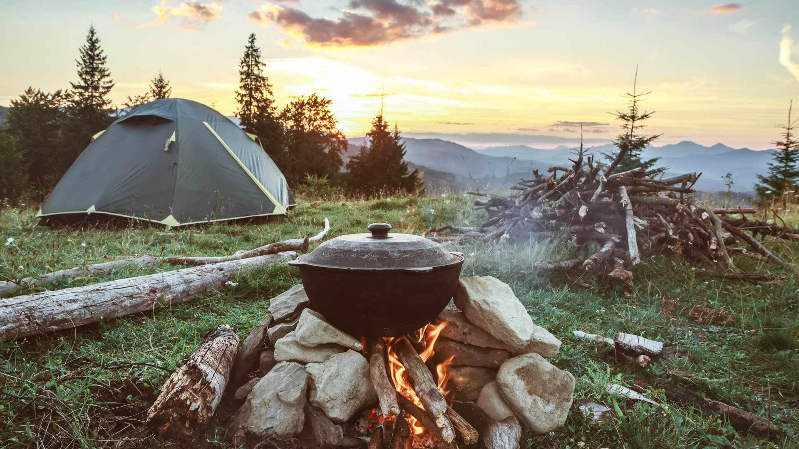
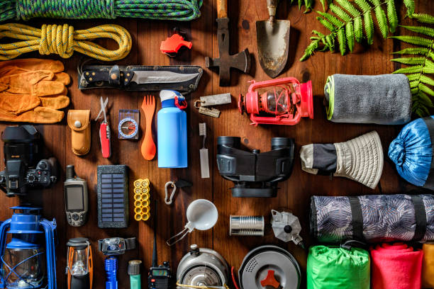

Camping Tips for Beginners
Published on August 1, 2023
Embarking on your first camping adventure can be an exhilarating yet daunting experience. Amidst the beauty of nature and the thrill of outdoor exploration, there are a few essential tips to ensure that your journey is safe, enjoyable, and unforgettable. Firstly, choose a well-established campground with accessible facilities and favorable weather conditions. Be sure to invest in quality camping gear, such as a reliable tent, cozy sleeping bag, and durable hiking boots. Prioritize packing light, f ocusing on essential items like a portable stove, headlamp, and a first-aid kit. Familiarize yourself with campsite etiquette, including the importance of leaving no trace. Additionally, mastering a few basic camping skills, like setting up a tent and building a campfire, will boost your confidence and enhance the overall experience. Lastly, embrace the adventure with an open mind and an eagerness to disconnect from the digital world. By following these beginner-friendly camping tips, you'll be well-prepared to forge lasting connections with nature and create cherished memories that will last a lifetime. Happy camping!
Read MoreThe Best Camping Gear of 2023
Published on July 15, 2023
Welcome to the future of camping! As we step into 2023, the world of outdoor gear has undergone remarkable innovations, providing campers with cutting-edge equipment to enhance their wilderness experiences like never before. From high-tech tents equipped with advanced weather-resistant materials and smart features to ultra-lightweight yet super-insulated sleeping bags that guarantee a cozy night's rest, the best camping gear of 2023 has something for every adventurer. Portable solar-powered chargers keep your devices juiced up, while compact and efficient camp stoves make cooking a breeze. Let's not forget the game-changing GPS-enabled hiking watches that guide you through uncharted terrains with precision and safety in mind. Whether you're a seasoned camping enthusiast or a beginner looking to dive into the great outdoors, investing in the top camping gear of 2023 is sure to elevate your outdoor escapades to new heights. So gear up and get ready to explore the wilderness with confidence and style!
Read More